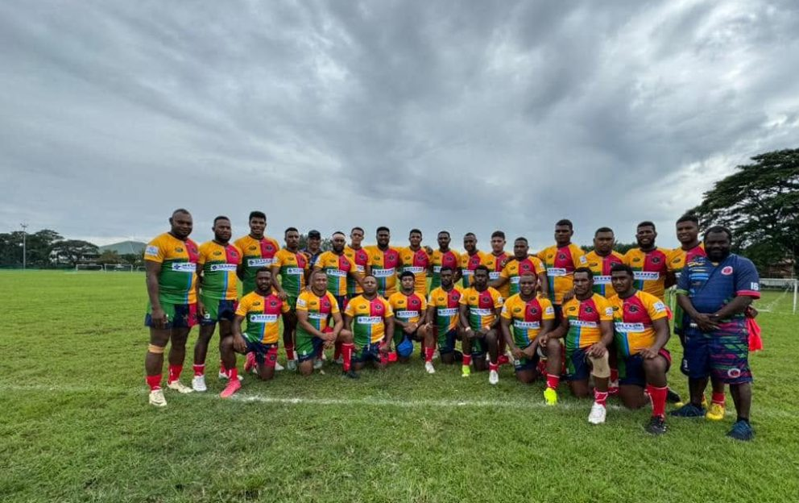
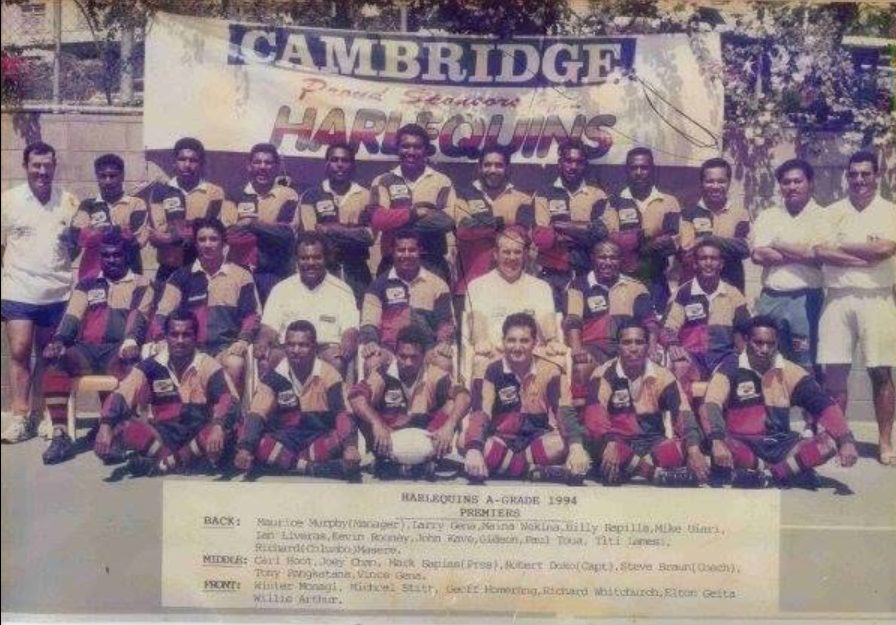
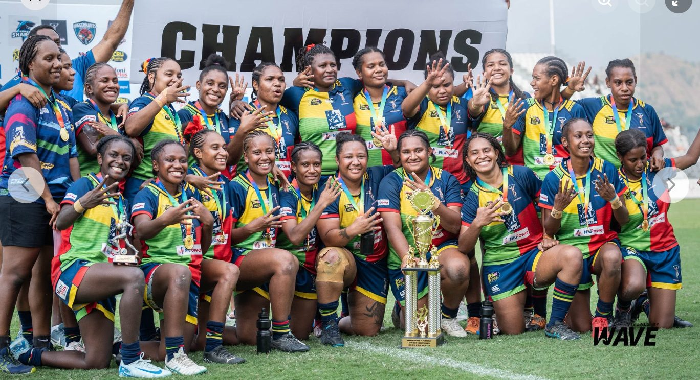
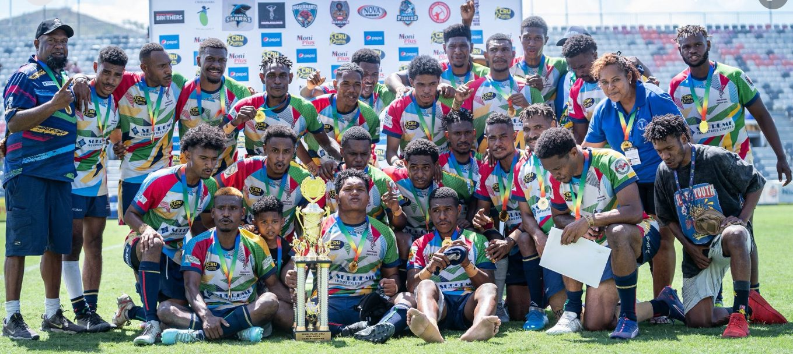
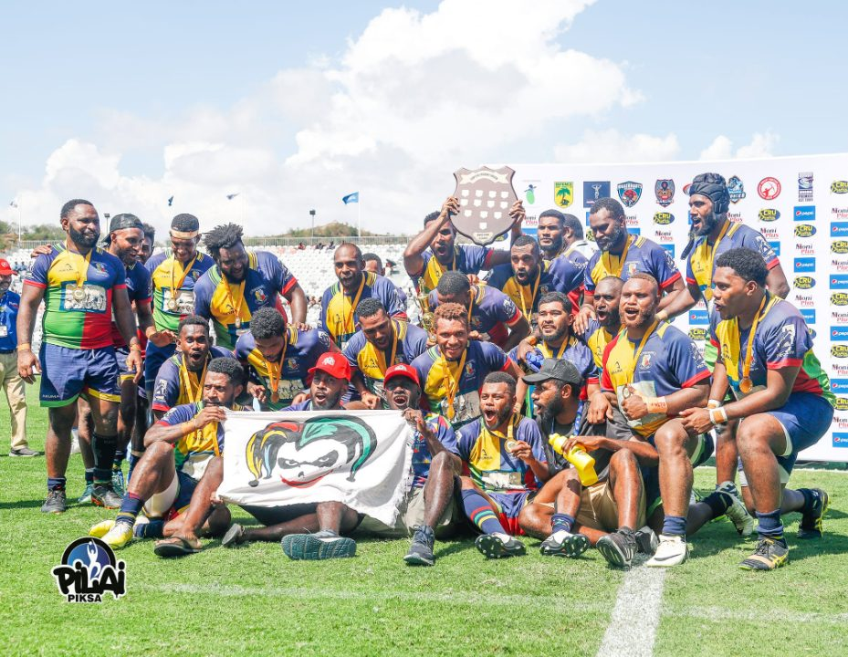
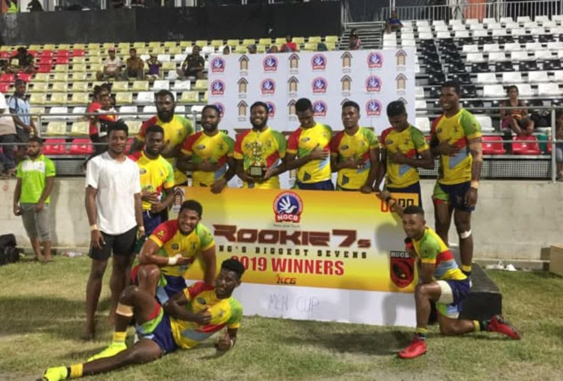
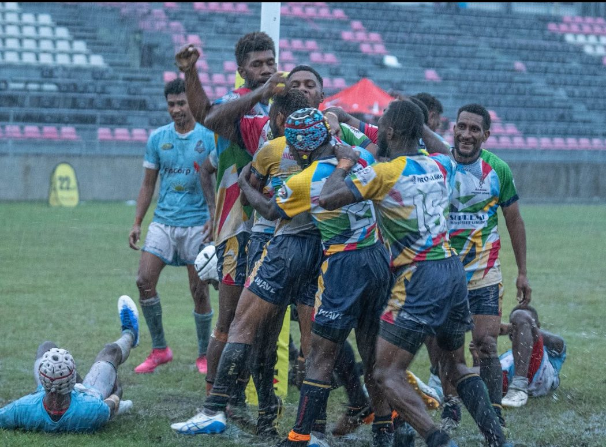

Est. 1993
Over three decades of club history, built on generations of local rugby talent.
A community rugby union club built on player development, teamwork and giving back to Port Moresby — on and off the field.
Join the Club See Our TeamsFounded in 1993 and proudly based in Port Moresby, Papua New Guinea, Harlequins Rugby Club stands as one of the most respected names in the Capital Rugby Union competition. Over the years, Harlequins has built a reputation not just for its competitive spirit on the field, but for its unwavering commitment to player development, community engagement, and sportsmanship. Driven by values of teamwork, discipline, and growth, the club has become a cornerstone for nurturing young talent and promoting rugby as a pathway to personal and social development. Whether through grassroots programs or elite-level competition, Harlequins continues to inspire the next generation of athletes while strengthening community ties across Port Moresby and beyond.

Over three decades of club history, built on generations of local rugby talent.
Programs for men's premier grade, women's rugby, and everyone in between.
Player development sits alongside community and financial-literacy initiatives run by the club.
A club shaped by its players, coaches and community as much as by its results.

Note: historical details above are drawn from publicly available club and competition reporting and are presented here as club history content for this project; figures should be verified against the club's own records before real-world publication.
Structured coaching to build rugby skills at every level, from beginner to experienced player.
Play for a club with deep roots in Port Moresby and a strong local following.
Learn alongside experienced players and coaching staff across all grades.
Rugby is a team game — join a club culture built on mateship on and off the pitch.
Recent highlights from around the club — on the sevens circuit, in the fifteens competition, and across the men's and women's grades.
Developing the next generation of rugby talent through structured junior and senior pathways.
Growing opportunities for women in rugby, from grassroots participation to premier grade.
Using rugby as a platform to build stronger, healthier communities across Port Moresby.
Moments from recent seasons — trophies, teamwork and match day.






